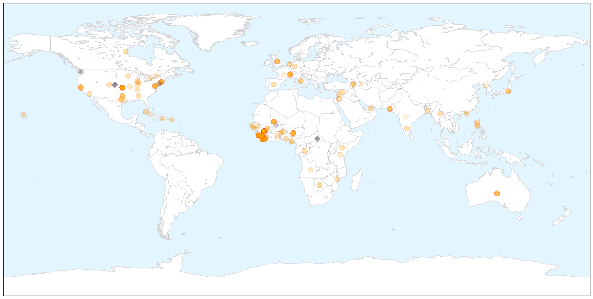

Ebola
30-Day Web Trend
0 alerts, 0 warnings

30-Day Twitter Trend
0 alerts, 0 warnings

Article Locations

X

Article Confidences

Top Articles:
- 1.000
- WHO will miss Ebola targets it set for Dec 1
- 1.000
- Healthcare apartheid is unacceptable – there can be no ‘them and us’
- 1.000
- WHO Will Miss Ebola Goals It Set for Today
- 1.000
- WHO Misses Ebola Targets it Set for December 1
- 1.000
- WHO Will Miss Ebola Targets it Set for Dec 1 — Naharnet
- 1.000
- Where Did Ebola Start?
- 1.000
- WHO Will Miss Ebola Targets It Set For Dec. 1
- 1.000
- WHO praises 'unprecedented' support to curb virus but warns of remaining hotspots
- 1.000
- World meeting most Ebola goals, but work remains
- 1.000
- WHO to miss Ebola targets it set for Dec. 1
- 1.000
- Connecticut Hospitals Have Spent $5 Million to Prepare for Ebola
- 1.000
- Some Ebola outbreak goals met, but threat still looms
- 1.000
- Head of UN states: 'There is still a huge risk of Ebola spreading'
- 1.000
- Mali President Declared No More Ebola Cases in Mali
- 1.000
- SA has capacity and experience to contain Ebola
- 1.000
- Ebola in retreat in eastern Sierra Leone
- 1.000
- U.N. agency: Number of Ebola cases now tops 16,000
- 1.000
- The virus travels: Karachi receives its first suspected Ebola patient from Liberia
- 1.000
- Huge risk of Ebola spread, warns U.N.
- 1.000
- Dangerous job of grave digging in Ebola hit Sierra Leone
- 0.999
- Correction: Ebola-West Africa story
- 0.999
- Ebola: CDC throws cold water on talk of 'airborne' transmission
- 0.999
- No more Ebola cases in Mali, says president
- 0.999
- UCSF doctor returning from Liberia sees improvement in Ebola outbreak, but says rural areas remain vulnerable
- 0.999
- Targets being met against 'stupid' Ebola, claims WHO
- 0.999
- No new cases Of Ebola in Mali
- 0.999
- Ebola crisis: WHO upbeat on targets
- 0.999
- As Ebola Scare Dies Down, Infectious Disease Prep Wanes
- 0.999
- WHO will miss Ebola targets, had set Dec 1 to isolate 70 per cent of patients
- 0.999
- Correction: Ebola-West Africa story
- 0.999
- Ebola virus suspect shifted to hospital in Pak
- 0.998
- WHO Warns Sierra Leone about Ebola Containment
- 0.998
- WHO will miss Ebola target date
- 0.998
- Liberia, Sierra Leone fall far short of reaching WHO goals on Ebola
- 0.998
- WHO lowers Ebola toll by nearly 1,000
- 0.998
- Liberia wrongly added 1,000 deaths to Ebola toll, WHO claims
- 0.998
- Ebola: UN health agency advises male survivors to abstain from sex for 3 months
- 0.998
- Two dead from Ebola-like Lassa fever in Benin
- 0.998
- WHO announces progress on Ebola, less deaths than thought
- 0.998
- Ebola efforts on target in Liberia and Guinea, officials say
- 0.998
- Interview: Dealing with Ebola
- 0.998
- WHO lowers Ebola toll by nearly 1,000 after Liberia counting ‘error’
- 0.998
- Ebola Watch: Spread of the virus is still a "huge risk"
- 0.998
- UPDATE 2-Sierra Leone lags in Ebola fight, but prognosis is very good
- 0.997
- Ebola cases no longer rising in Guinea, Liberia, UN health agency reports
- 0.997
- McLaren Bay Region officials talk preparedness: If not Ebola, 'there will be something later on'
- 0.997
- What W. Africa can teach us about Ebola
- 0.997
- WHO isolates, treats 70 pct of Ebola infected cases in Africa
- 0.997
- WHO Isolates, Treats 70% of Ebola Infected Cases in Africa
- 0.997
- French president cheered in Ebola-stricken Guinea
Showing top 50 articles...
Top Tweets:
- 0.890
- RT: Health officials hold suspected Ebola patient at Karachi airport Pakistan
- 0.802
- RT: Effective action required as Ebola surges in Sierra Leone. http://t.co/kUio8vHkGA Ebola GlobalDev TackleEbola philant…
- 0.767
- RT: "Ebola Ebola invisible enemy..." been humming this all afternoon. https://t.co/mpXty3qS07 AfricaStopEbola
- 0.657
- RT: Breaking: Suspected Ebola patient traveled from Liberia to Pakistan admitted in Isolation Ward of Jinnah Hospital
- 0.620
- Finding the Ebola virus' achilles heel http://t.co/IAEayMhV8S
- 0.534
- RT: Isolate Ebola not the affected countries- AU Director of social affairs AUonEbola UnitedAgainstEbola
- 0.528
- Here's an Ebola puzzle for you: If the virus isn't airborne why do doctors and nurses need to wear full... http://t.co/k8YvPeFXRW
- 0.526
- Le virus Ebola a fait près de 7 000 morts http://t.co/HaTvN3t032 via